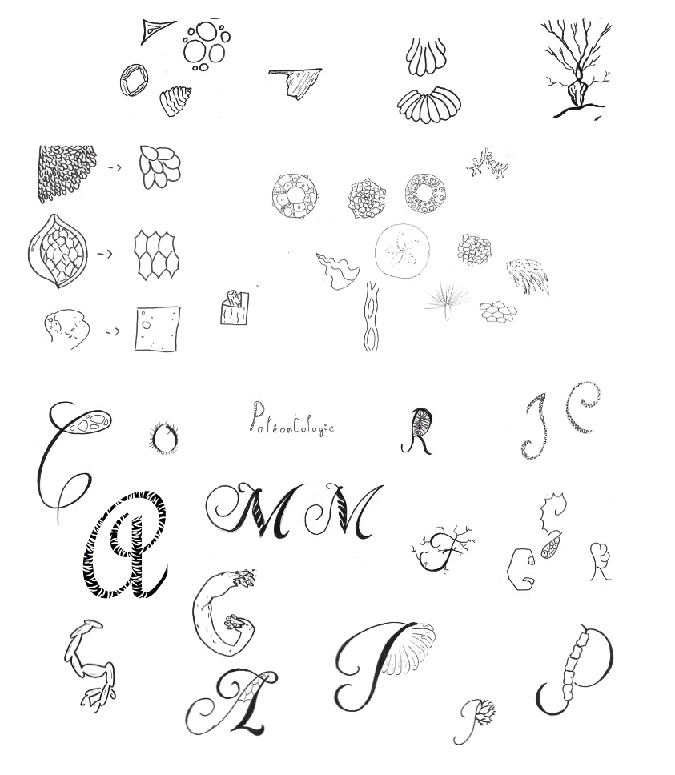
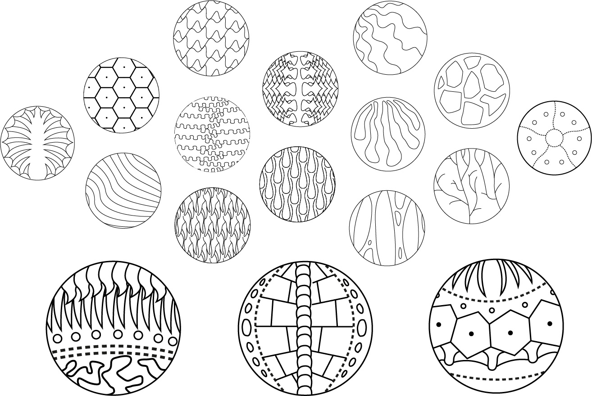
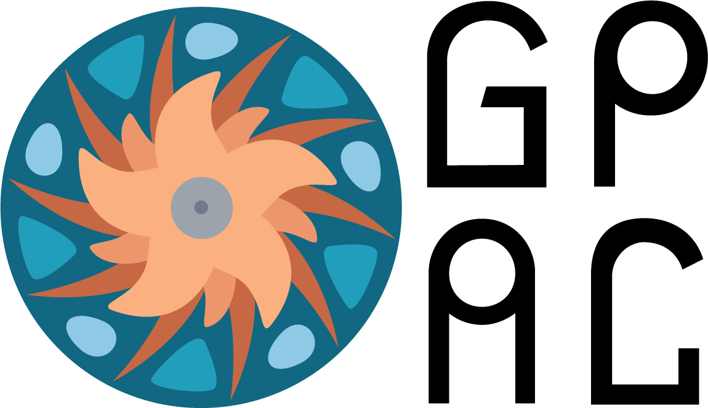
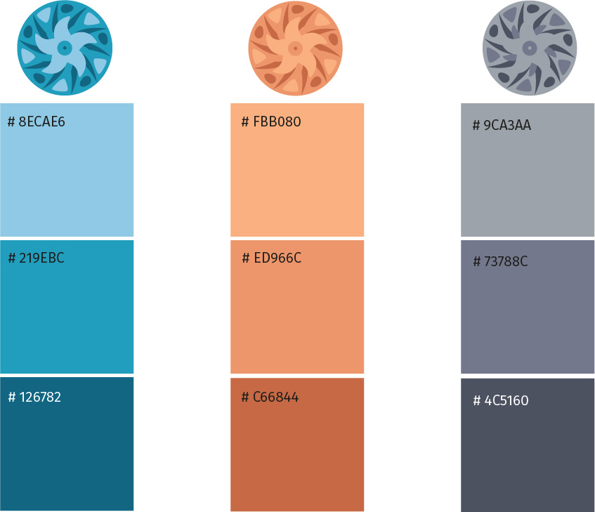
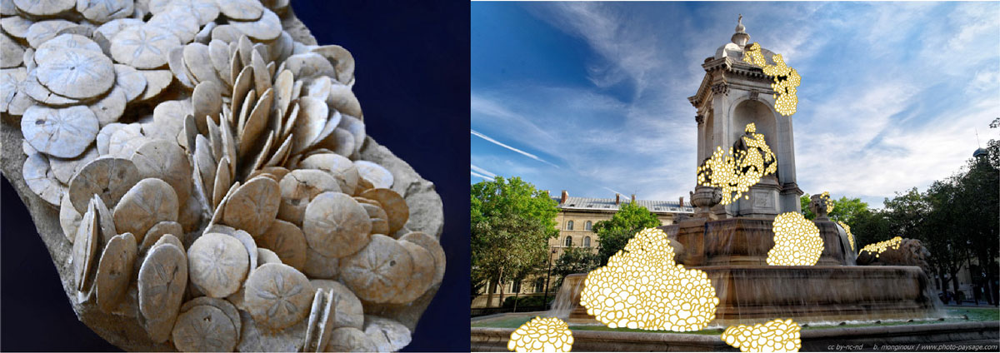

La Galerie d'anatomie comparée est un lieu extrêmement riche d'histoire et de trésors. Pourtant, elle n'a actuellement pas d'identité visuelle propre. Ce projet vise à lui en créer une, en se basant sur une analyse poussée du lieu et de son histoire.
La Galerie de Paléontologie et d'Anatomie comparée transmet un message millénaire: la vie est incroyablement diverse, mais tous font partie d'une seule immense famille. Travailler à partir des textures relevées dans le lieu permet d'être dans la continuité de cette idée: en effet, celles-ci sont très variées, mais elles se répètent également à travers tout le musée.


Chaque texture a été simplifiée et utilisée comme motif. Elles ont ensuite été assemblées pour former de nouveaux dessins étranges et organiques, base de l'idée du logo.

Le logotype a été créé à partir des textures relevées dans la Galerie et évoque les différentes collections du musée. Les deux premiers cercles de triangles arrondis évoquent les organes internes. Le troisième cercle, plus agressif, correspond aux squelettes. Enfin, les formes rondes autour et la composition en étoile proviennent des nombreux invertébrés également présentés, dont la majorité sont des coquillages. La typographie utilisée est la Gulax, de Velvetyne. Elle a été affinée pour gagner en légèreté et élégance.

Les couleurs proviennent toutes du bâtiment de la Galerie, qui tient une place importante dans la richesse du lieu. Elles permettent également une déclinaison du logotype en fonction de la signalétique. Le bleu est associé à la collection d'invertébrés, car la majorité d'entre eux provient du fond des océans. Le orange, lui, correspond aux organes internes par sa chaleur et sa vibrance. Enfin, le gris évoquant la pierre, il est utilisé pour les fossiles et squelettes du musée. A partir de l'analyse d'une espèce méconnue présente dans la Galerie, une campagne publicitaire fictive a été imaginée. Celle-ci devait s'inviter dans la ville, hors du musée, pour intriguer les spectateurs, et leur faire découvrir cette espèce. J'ai choisi la Scutella Paulensis, oursin plat préhistorique qui se développe en amoncellement de plusieurs dizaines d'individus. Ici, ils sortiraient des grandes fontaines de Paris, de l'eau dans laquelle ils évoluent habituellement à l'abri des regards.
